2014 - current
Rapido Internet Solutions BV
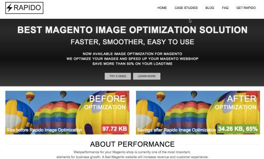
June 2015
Magento Live UK 2015
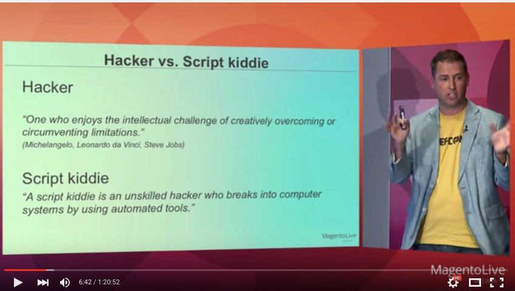
Okt 2014
Meet Magento Switserland 2014
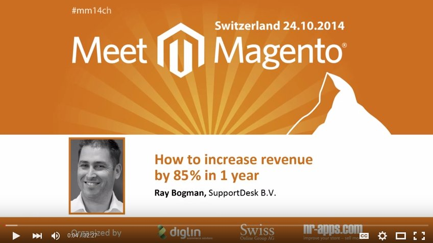
June 2012 - current
SupportDesk BV
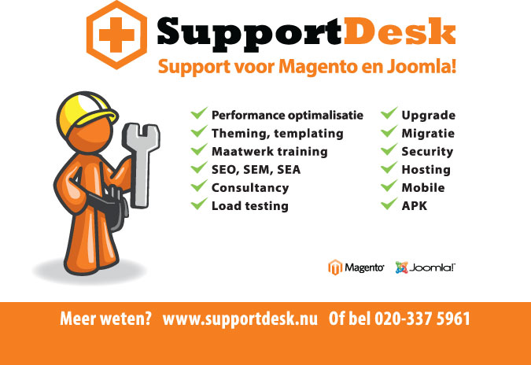
Jan 2011 - current
Magento Optimized Hosting for CloudVPS
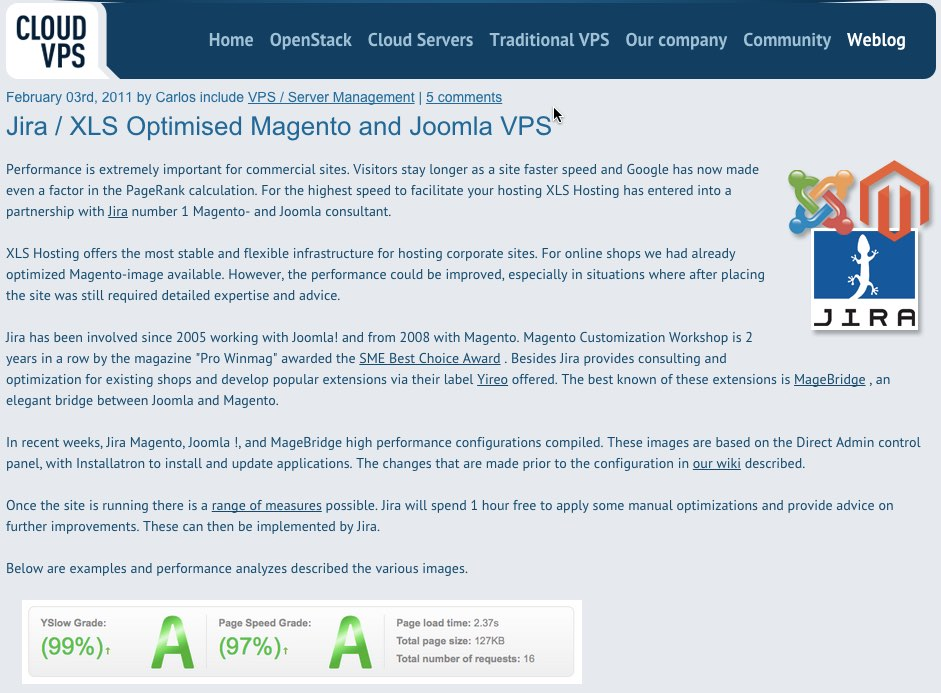
2010 - 2013
Wild Hibiscus Netherlands
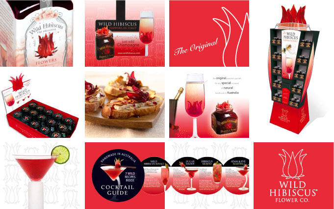
2009- 2011
Yireo
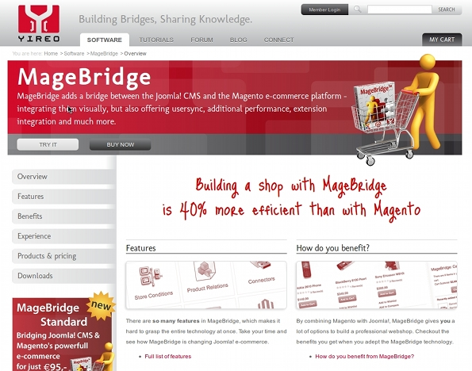
2006 - current
Jira ICT
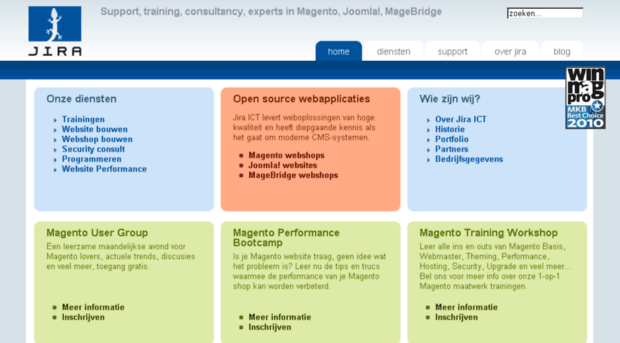
2005
Bogman ICT
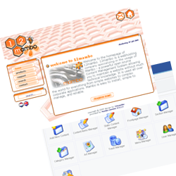
2000 - 2007
KPN Telecom
1998 - 1999
Hotel Mercure Amsterdam
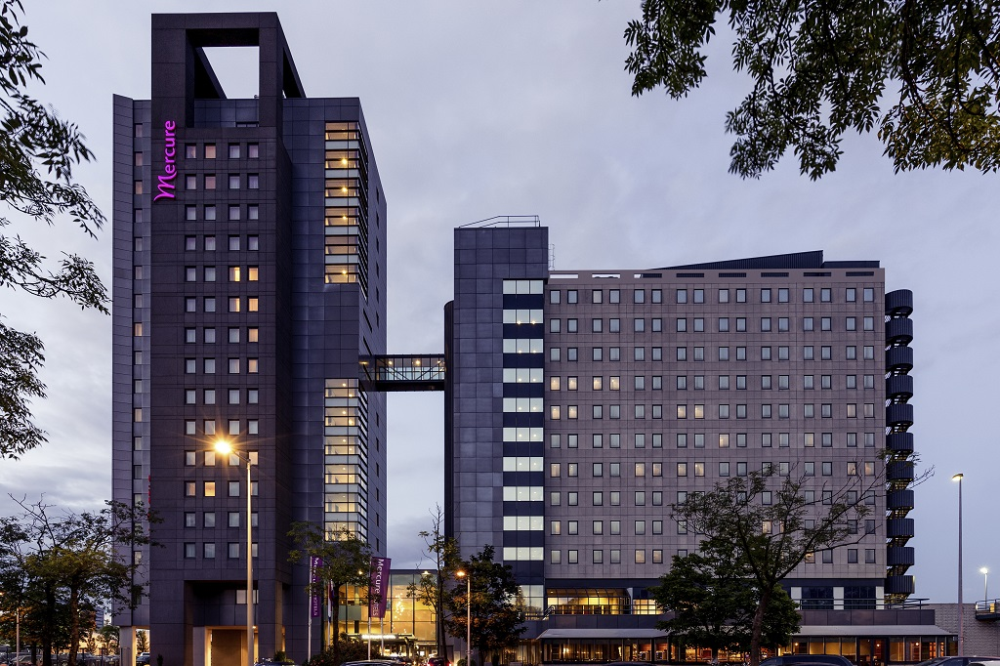
1996- 1997
Marriotts Orlando World Center
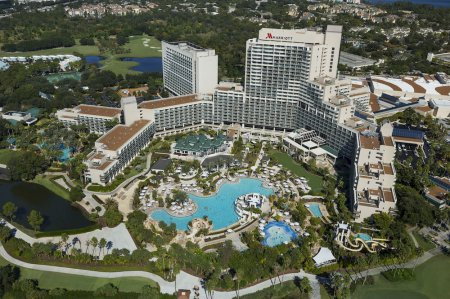
1993
My first PC, a IBM SX/25mhz
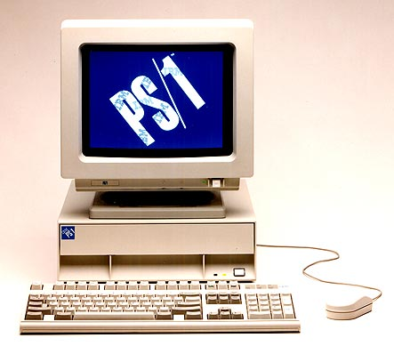